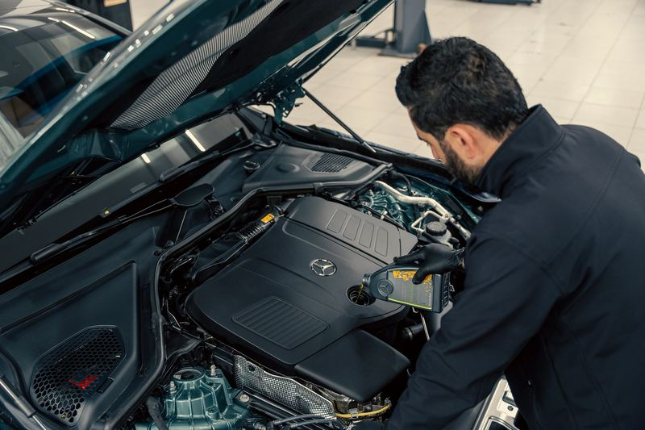
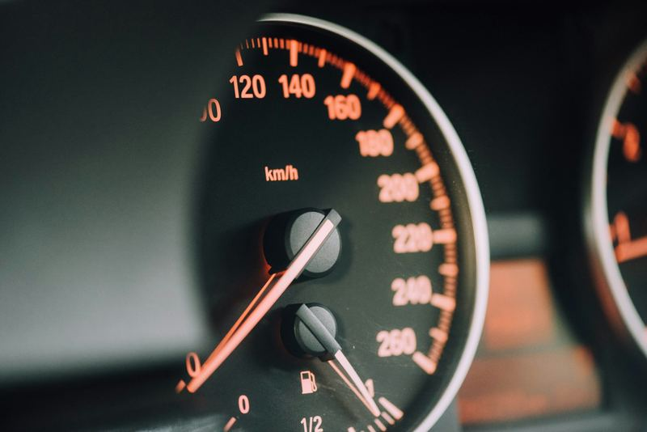

Servis všech značek
Pravidelný servis, oleje, filtry, brzdy a opravy, které auto zrovna potřebuje.
Zadejte datum první registrace z velkého techničáku. Nové osobní auto jede na první STK po čtyřech letech, pak každé dva roky.

Pravidelný servis, oleje, filtry, brzdy a opravy, které auto zrovna potřebuje.

Auto prohlédneme, opravíme, co by neprošlo, a technickou zařídíme.

Přezutí a vyvážení, vybavení na to máme.
„Profi vybavení servisu včetně pneu, žádné sliby, chyby, vždy je vše podle domluvy a za solidní cenu.“
zákazník na Firmy.cz